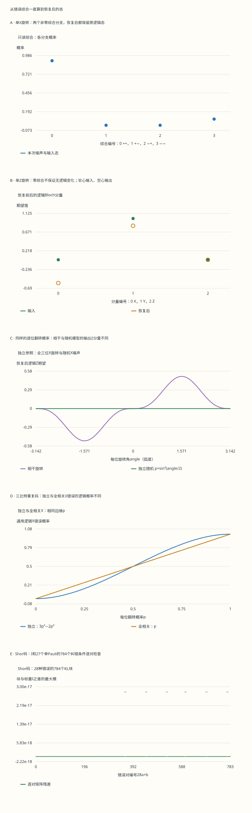

本页目录
量子信息 III · 量子纠错：从综合到恢复后的量子态
前置：量子位与纠缠、量子算法、密度矩阵与量子通道。本课的检验标准是：恢复操作能否保留任意逻辑输入，连同它与外部参考系统的纠缠？一张错误位置表只是起点。
无脚本对照：五幅图与下表来自同一份六组记录。固定输入为逻辑+Y态；保真度只针对该输入，不能代替通用纠错条件。零概率分支的条件态记为不适用。

| 预设 | 输入保真度 | 输出Y | 输出Z | 零概率条件分支数 | 保迹残差 |
|---|---|---|---|---|---|
| coherent | 0.978451414 | 0.956902829 | 0.0900099737 | 0 | 3.33066907e-16 |
| single | 1 | 1 | 2.77555756e-16 | 2 | 0 |
| phase | 0.912667807 | 0.825335615 | 2.77555756e-16 | 3 | 0 |
| zero | 1 | 1 | 2.22044605e-16 | 3 | 0 |
| independent | 0.972 | 0.944 | 3.33066907e-16 | 24 | 0 |
| depolarizing | 0.825481481 | 0.650962963 | 1.11022302e-16 | 192 | 6.66133815e-16 |
下载六组完整记录。保留所有物理Kraus矩阵、逻辑恢复分支、条件态、Shor码基、稳定子群与2619个低权重Pauli。相干旋转没有被换成随机Pauli混合。
1. 要保护的是一整个二维空间
设未知逻辑态为 \(|\psi\rangle=\alpha|0\rangle+\beta|1\rangle\)。用两个 CNOT 把它编码为 \(V|\psi\rangle=\alpha|000\rangle+\beta|111\rangle\)，其中 \(V^\dagger V=I_2\)。这不是三份未知态：例如 \(|+\rangle\) 变成 GHZ 态，任取一位的约化态都是 \(I/2\)，不能单独读出原来的相位。
保护对象是 \(\operatorname{span}\{|000\rangle,|111\rangle\}\)，而非只保护某一个例子。如果一个操作把 \(|+_L\rangle\) 留在原处，却把 \(|0_L\rangle\) 变成 \(|1_L\rangle\)，它就没有完成通用纠错。后面会看到：只盯着一个输入的保真度，很容易误判。
直接测三个数据位再多数表决，会读取逻辑的 0/1 内容。我们需要另一类问题：相邻两位是否相同？这个回答可以在不区分两个码基的情况下给出。
2. 综合测量读奇偶，不读逻辑振幅
取 \(S_1=Z_1Z_2\)、\(S_2=Z_2Z_3\)。它们对易，因此可同时测量。把结果记成 \(s=(s_1,s_2)\)，\(s_i=\pm1\)。完整的测量投影为
码字在 \(++\) 分支；\(X_1,X_2,X_3\) 分别把它带到 \(-+ ,-- ,+-\) 分支。测到这些结果后，依次施加 \(X_1,X_2,X_3\)；\(++\) 则不动。这个恢复表由预定错误集合设计，不是“综合告诉你真实发生的全部事件”。
例如 \(X_1X_2\) 与 \(X_3\) 都给 \(+-\)。恢复器施 \(X_3\) 后，双错留下 \(X_1X_2X_3=X_L\)。单个 \(Z_i\) 则与两个稳定子对易，仍给 \(++\)，但在码空间上作用为 \(Z_L\)。相反，\(Z_1Z_2\) 本身就是稳定子，对每个码字均无影响。同为零综合，可能是无害稳定子，也可能是有害逻辑操作。
本课统一使用 \(Y=iXZ\)，因此 \(Y|0\rangle=i|1\rangle\)、\(Y|1\rangle=-i|0\rangle\)。单独一个 Pauli 的整体相位不改变物理态，但把多个项相干相加时，不能随意丢掉各项的相对相位。实验保留这些复数。
3. 用一个公式把编码、噪声、测量、恢复接起来
噪声通道写成 \(\mathcal N(\rho)=\sum_aE_a\rho E_a^\dagger\)，满足 \(\sum_aE_a^\dagger E_a=I\)。其中 \(a\) 是被忽略的环境或经典标签；不同 \(a\) 的输出按密度矩阵相加。令 \(R_s\) 为上述恢复操作，得到逻辑空间上的 Kraus 算符
对本页三比特码，四个综合空间各为二维，\(R_s\) 把每个空间送回码空间，因此这一步不会丢掉泄漏分量；一般编码不能未经检查就把 \(V^\dagger\) 当作完整解码通道。这里可直接核验 \(\sum_{a,s}K_{a,s}^\dagger K_{a,s}=I_2\)。
分支概率是 \(p_{a,s}=\operatorname{Tr}\rho_{a,s}\)；只有概率大于零时，条件态才定义为 \(\rho_{a,s}/p_{a,s}\)。概率为零的条件态不填成零矩阵，也不填成输入态。若只读到综合 \(s\) 而不知道环境标签 \(a\)，必须先求 \(\sum_a\rho_{a,s}\) 再归一。
实验分别显示物理 Kraus 矩阵、所有恢复分支、合并后的综合分支、总态和保迹残差。浮点残差接近零是数值一致性证据；正文推导给出理想模型下的精确理由。
4. 一个连续旋转为什么真的能纠正
一位发生 \(U_j=\exp(-i\eta X_j/2)=cI-isX_j\)，其中 \(c=\cos(\eta/2)\)、\(s=\sin(\eta/2)\)。错误后的编码态是两个正交综合分量的叠加。测量后，\(++\) 分支留下 \(c|\psi_L\rangle\)，单错分支留下 \(-isX_j|\psi_L\rangle\)。恢复后，两个逻辑 Kraus 算符分别为 \(cI\) 和 \(-isI\)，故
这不是先假定“连续误差就是随机翻转”。我们从一个相干算符出发，用实际投影区分了其可纠正分量。对任意 \(\eta\) 和任意输入都成立，连同输入与参考系统的纠缠也一并保留。
若旋转轴换成 \(Z_j\)，\(I\) 与 \(Z_j\) 都在同一个 \(++\) 综合里，二者继续相干相加。恢复后的逻辑算符是 \(e^{-i\eta Z_L/2}\)，不是恒等。三比特码对某一组误差的成功，不能迁移成对所有单比特误差的成功。
5. 同样的逐位翻转概率，仍不是同一个通道
现在三个数据位各发生同样的相干 \(X\) 旋转。展开 \(U^{\otimes3}\)，\(++\) 综合包含无错项和三错项；每个非零综合则同时包含一个单错项及其互补双错项。恢复后得到
把四个 \(K_s\rho K_s^\dagger\) 展开并相加，定义 \(q=3c^2s^4+s^6\)、\(\kappa=2c^3s^3\)，得到
独立随机 \(X\) 噪声若取每位概率 \(p=s^2\)，确有相同的 \(q=3p^2-2p^3\)，但其逻辑通道只有前两项。缺少的对易子项改变了某些可观测量。取输入 \(|+i\rangle\)，初始 Bloch 向量为 \((0,1,0)\)：随机模型输出 \((0,1-2q,0)\)，相干模型输出 \((0,1-2q,2\kappa)\)。
两者对此纯输入的保真度却相同，都是 \(1-q\)，因为 \(\operatorname{Tr}(\rho[X,\rho])=0\)。这说明“一个保真度数值相同”不足以断言通道相同。实验的旋转扫描显示输出 \(Z\) 分量，并把两种完整密度矩阵放在表里供比较。
6. 概率模型和“失败”必须一起定义
对每位独立 \(X\) 错误，固定多数恢复在至少两位翻转时留下逻辑 \(X\)。其概率为 \(q=3p^2(1-p)+p^3\)。若以概率 \(p\) 同时施 \(XXX\)、否则施 \(III\)，三位边缘仍都是 \(p\)，逻辑 \(X\) 概率却变成 \(p\)。
这里的“逻辑错误概率”针对预定恢复器的算符类别。若输入刚好是 \(X\) 本征态，逻辑 \(X\) 不改变它的密度矩阵，特定态保真度仍可为 1。对逻辑 \(X\) 通道，最坏纯态保真度为 \(1-q\)；平均纯态保真度为 \(1-2q/3\)，因为 Bloch 球上 \(\langle X\rangle^2\) 的平均是 \(1/3\)。这几个量回答不同问题。
实验的退极化模型约定每位以概率 \(1-p\) 施 \(I\)，以概率 \(p/3\) 各施 \(X,Y,Z\)，并完整枚举 64 种组合。若采用 \(\rho\mapsto(1-\lambda)\rho+\lambda I/2\) 的另一种参数化，需要 \(\lambda=4p/3\)；不能直接把两个参数都写成同一个 \(p\)。
7. Knill–Laflamme 条件：什么时候存在统一恢复
令 \(V\) 的列张成码空间。一组噪声算符可被同一恢复精确纠正，当且仅当存在矩阵 \(C\) 使
必要性的核心是内积保持：恢复等距映射若把 \(E_aV|\psi\rangle\) 变成 \(|\psi\rangle\otimes|e_a\rangle\)，两侧取内积便得到上述形式。环境状态不能依赖未知逻辑输入，否则线性叠加不能对所有输入同时恢复。
充分性也有具体构造。把半正定 Gram 矩阵 \(C\) 酉对角化，线性重组误差为 \(F_\mu\)，使 \(V^\dagger F_\mu^\dagger F_\nu V=d_\mu\delta_{\mu\nu}I\)。对 \(d_\mu>0\)，\(F_\mu V/\sqrt{d_\mu}\) 是彼此像空间正交的等距映射。先区分这些空间，再逆转各等距映射即可；零本征值分量在码空间上消失。条件保证存在恢复，不保证某个给定解码算法高效。Knill–Laflamme 条件的教学证明。
三比特码对 \(\{I,X_1,X_2,X_3\}\) 的 \(C\) 为单位矩阵；加入 \(Z_1\) 后，\(V^\dagger IZ_1V=Z\) 不是标量，条件失败。由于条件对误差及其线性组合成立，完整量子码纠正一个位置上的 \(I,X,Y,Z\)，才能进一步保证纠正该位置的一般噪声；只验证 \(X\) 不够。
8. Shor 九比特码：相同综合也可以完全无害
定义 \(|g_\pm\rangle=(|000\rangle\pm|111\rangle)/\sqrt2\)，编码为 \(|0_L\rangle=|g_+\rangle^{\otimes3}\)、\(|1_L\rangle=|g_-\rangle^{\otimes3}\)。六个块内 \(Z\) 校验定位块内翻转，另两个跨块 \(X\) 校验检测块的相位翻转：
| 校验 | Pauli 字符串（左端是第1位） |
|---|---|
| 1、2 | ZZIIIIIII；IZZIIIIII |
| 3、4 | IIIZZIIII；IIIIZZIII |
| 5、6 | IIIIIIZZI；IIIIIIIZZ |
| 7、8 | XXXXXXIII；IIIXXXXXX |
任取两个生成元，\(X\) 与 \(Z\) 相遇的位置数为偶数，因此对易。它们各固定两个码基。实验列出群的 256 个元素，码空间维数为 \(512/256=2\)；完整记录还含两个码基的八个非零振幅。
一个 \(X\) 错误由所在三位块的两项校验定位。一个 \(Z\) 错误只需知道在哪个块：同块的 \(Z_1\) 与 \(Z_2\) 对码字作用相同，因为 \(Z_1Z_2\) 是稳定子；无需进一步区分它们。\(Y=iXZ\) 的两部分由这两层结构一起处理。实验对 \(I\) 和 27 个单 Pauli 的全部 \(28^2=784\) 对计算纠错条件，而非仅检查每个错误单独的范数。
在此码基约定下，可取 \(X_L=Z_1Z_4Z_7\)、\(Z_L=X_1X_2X_3\)。前者交换两个逻辑基，后者给它们相反符号。实验还逐一枚举 2619 个权重 1～3 的 Pauli：最低权重的非平凡逻辑操作为 3，但权重 2 的稳定子可以不产生综合。这就是“码距为 3”与“每个非单位双错都被检测到”之间的区别。稳定子与 Shor 码的定义参照。
9. 从稳定子到 CSS，再到空间中的链
独立、对易且生成群不含 \(-I\) 的 \(r\) 个 Pauli 校验定义投影 \(P=2^{-r}\prod_j(I+S_j)\)。展开为群元素之和，只有单位元有非零迹，故 \(\operatorname{Tr}P=2^{n-r}\)。维数回答编码了多少信息；码距还需寻找与所有校验对易、却不属于稳定子群的最低权重 Pauli。
CSS 码把 \(X\) 型和 \(Z\) 型校验分别写成二进制矩阵 \(H_X,H_Z\)。两类校验重叠偶数次才对易，故 \(H_XH_Z^T=0\)（在 \(\mathbb F_2\) 上）。独立约束数给出 \(k=n-\operatorname{rank}H_X-\operatorname{rank}H_Z\)。这不是随便选两个经典好码便能组合；正交关系是必要的结构条件。
在二维表面码中，可以把一类错误看成格子上的链，校验读到其端点。恢复器寻找同样端点的另一条链；错误链加恢复链若只是稳定子边界，就没有逻辑残留，若绕过不可收缩的环或连接相应边界，则可能成为逻辑操作。对应的 CSS 对易关系可理解为“边界的边界为零”。有边界与无边界的格子编码数不同，不能只凭一张方格图认定 \(k\)。
10. 会纠错的码，还需要不会放大错误的电路
测 \(Z_iZ_j\) 可准备辅助位 \(|0\rangle\)，依次以数据位为控制、辅助位为目标施 CNOT，再测辅助位的 \(Z\)。对任意计算基，辅助位记录异或；对叠加输入，这实现奇偶投影，而不是分别测两个数据位。
CNOT 会传播已有错误：\(X_c\mapsto X_cX_t\)、\(Z_t\mapsto Z_cZ_t\)，而 \(Z_c\) 与 \(X_t\) 不传播到另一位。于是测一个高权重校验时，辅助位上的一个故障可能经后续门带到多个数据位。编码距离本身不会自动阻止这种传播。横向门限制同一块内传播，辅助态验证、标志位、重复综合和解码器则处理不同故障模式。错误传播与容错构件。
本页实验把恢复测量与门当作理想操作。因此它验证存储噪声和恢复映射，不预测带噪综合电路的阈值，也不把一次测量综合当作可信的长期记录。
11. 阈值与前沿：把尚缺的假设写出来
在理想独立重复码的玩具递推 \(p_{\ell+1}=3p_\ell^2-2p_\ell^3\) 中，\(0<p<1/2\) 时错误下降。真实容错论证还需指定噪声的空间和时间相关、故障位置、测量电路、门集、恢复调度及解码器；其阈值不能由这个三次多项式直接移植。
面向研究，可以沿三个方向继续：表面码追问几何局域性与带噪测量的时空解码；量子 LDPC 码追问稀疏校验、码率、距离与可执行连接的代价；玻色编码追问连续变量中的位移噪声如何转成可读综合。它们仍共享同一检验链：噪声模型是什么、综合实际测到什么、恢复通道是什么、哪种逻辑误差留下来。
这里不列没有平台、日期和电路约定的“通用物理比特开销”。用新实验或工业进展更新课程时，应同时保存任务、噪声与解码条件、逻辑错误的定义和端到端资源；单个物理错误率或一个漂亮的阈值数字不足以完成比较。
12. 练习与完整答案
先写出算符、综合和输入态，再看结果。不要用某个特殊态的成功代替对整个码空间的证明。
1. Y₂之后怎样恢复？整体相位何时能省略？
\(Y_2|\psi_L\rangle=i\alpha|010\rangle-i\beta|101\rangle\)，综合为 \(--\)。恢复 \(X_2\) 后得到 \(i\alpha|000\rangle-i\beta|111\rangle=iZ_L|\psi_L\rangle\)。整个分支的 \(i\) 可省略，但逻辑 \(Z\) 留下；若把本分支与另一个算符项相干相加，不能先各自随意删除整体相位。
2. p=0.1的两种X噪声为什么不能只看一次保真度？
独立噪声逻辑 \(X\) 概率为 \(3(0.1)^2(0.9)+(0.1)^3=0.028\)；全相关模型为 \(0.1\)。对 \(|0\rangle\)，保真度分别为 \(0.972\) 和 \(0.9\)。对 \(|+\rangle\)，\(X|+\rangle=|+\rangle\)，两种通道保真度都是 1。它们仍然不是恒等通道。
3. 单X旋转η=π/3：综合概率会泄露输入吗？
\(c=\sqrt3/2\)、\(s=1/2\)。恢复后的两个非零 Kraus 算符为 \((\sqrt3/2)I\) 和 \(-(i/2)I\)，概率分别为 \(3/4\) 和 \(1/4\)，与 \(\alpha,\beta\) 无关。另两个综合概率为零，条件态不定义。合并分支得到 \(\rho\)，不是“有1/4概率恢复失败”。
4. 全三位旋转π/3：找出随机模型没有的读数。
\(K_{++}=(3\sqrt3/8)I+(i/8)X\)，其余三个 \(K_s=-(3i/8)I-(\sqrt3/8)X\)。因此 \(q=5/32\)、\(\kappa=3\sqrt3/32\)。对 \(|+i\rangle\)，四个综合概率为 \(7/16,3/16,3/16,3/16\)。
相干输出 Bloch 向量为 \((0,11/16,3\sqrt3/16)\)；取 \(p=1/4\) 的独立随机模型输出 \((0,11/16,0)\)。两者对该输入的保真度同为 \(27/32\)，但测逻辑 \(Z\) 可区分。相干输出纯度为 \(101/128\)，随机输出为 \(377/512\)，也不相同。
5. 同综合的两个错误，如何判断是退化还是失败？
三比特码的 \(I,Z_1\)：\(V^\dagger I^\dagger Z_1V=Z\)，不是标量，不能统一恢复任意逻辑态。Shor 码的 \(Z_1,Z_2\)：\(Z_1Z_2\) 属稳定子，因此 \(V^\dagger Z_1^\dagger Z_2V=I\)，符合纠错条件。关键是码上作用，而非是否能给物理错误贴不同标签。
6. 检查一组CSS校验是否对易，并计算编码数。
取三行 \(1111000,1100110,1010101\) 构成 \(H\)，令 \(H_X=H_Z=H\)。每行权重为 4，任意两行重叠 2 个位置，故 \(HH^T=0\)。三行独立，\(k=7-3-3=1\)。其七列是七个不同非零三位向量，所以没有权重1或2的非零核向量；这也解释了单位置错误为何可由综合区分。计算维数与证明距离仍是两个步骤，不能只由 \(k=1\) 推出距离。
7. 测Z₁Z₂Z₃Z₄时，一个辅助位故障能传播多远？
辅助位为四个 CNOT 的共同目标。若在第一个 CNOT 之后发生辅助位 \(Z_a\)，它通过后面三门分别传播成 \(Z_2,Z_3,Z_4\)，同时保留 \(Z_a\)。数据上可留下权重3错误。完美门也能传播输入错误；不能因为校验测量的目标是纠错，就假定它本身无害。具体容错方案必须控制或识别这种传播。
8. 玩具递推的阈值是多少？它为什么不是硬件阈值？
\(f(p)-p=3p^2-2p^3-p=-p(1-p)(1-2p)\)。所以 \(0<p<1/2\) 时下降，\(1/2<p<1\) 时上升，固定点为 \(0,1/2,1\)。从 \(p_0=0.1\) 得 \(p_1=0.028\)、\(p_2=0.002308096\)。
这个精确结果只属于独立数据翻转和理想恢复的递推。若每层有相关故障、带噪综合或故障传播，下一层一般不再由同一个 \(f\) 描述，因此不能把 \(1/2\) 报成实际量子处理器的容错阈值。
继续阅读：容错量子计算前沿。先带走一张可复算的记录：错误集合、综合、恢复算符、输出态，以及该记录尚未覆盖的电路噪声。